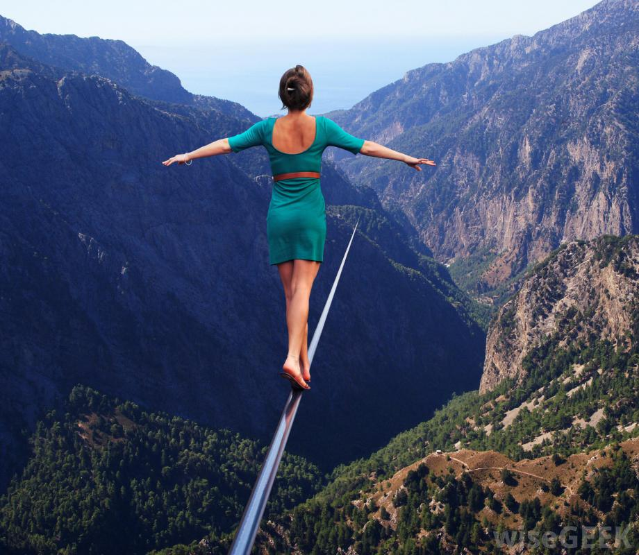

Типові випадки ураження холодом в погоні за здоров‘ям, фігурою, комфортом
Тут 3 життєвих ситуації, в котрі люди потрапили через незнання. Перегляньте їх, можливо ви впізнаєте себе в деяких випадках. Багато тексту, але раджу прочитати. Витратите 5 хвилин, зате отримаєте виграш в роках повноцінного життя.
1
Валерій Юрійович, офіцер, в 46 років став інвалідом 2-ї групи і був комісований через ревматоїдний поліартрит. Поставивши діагноз, лікар військового госпіталю прописав гормональні препарати, заявивши, що хвороба невиліковна і надіятись нема на що. Тоді Валерій Юрійович звернувся в клініку тибетської медицини.
Знаючи, що ревматоїдний поліартрит відноситься до хворіб «холоду», лікар клініки в
процесі діагностики почав задавати пацієнту навідні питання, щоб разом з ним вияснити від чого
з‘явилась хвороба, що могло спровокувати її розвиток.
- Чи любите ви ходити в лазню? - спитав він пацієнта.
- Так, - відповів Валерій Юрійович. -Я люблю добряче попаритись в лазні, а тоді пірнути в басейн з
холодною водою, а якщо це зима, то в замет або в ополонку.
- У вас бувають застуди?
- Так, бувають, але я ніколи не лежу через це в ліжку.
- Ви легко переносите зиму, не мерзнете на вулиці?
- Навпаки, я майже ніколи не одягаю ні шапки, ні рукавичок.
- Чому ви надаєте перевагу в їжі?
- Що дружина приготує, то я і їм, - відповів Валерій Юрійович. - Особливо не розбираюсь. Але все
таки
надаю перевагу рибі а не м‘ясу.
- А приправи ви вживаєте?
- Я не люблю приправ. Нічого в них не розумію. Окрім кетчупу і майонезу, нічим їжу не заправляю.
- Чи їсте ви салати із сирих овочів?
- Так, щодня.
- Любите солодке?
- Дуже люблю.
- А пиво?
- Пиво люблю ще більше.
- І обов‘язково холодне?
- Так, із холодильника.
- Чи завжди ви почуваєте себе бадьорим зранку, і якщо ні, то що ви робите, щоб збадьоритись?
- Ранком, щоб збадьоритись, я приймаю холодний душ. Після того п‘ю каву - і на роботу.
Всі ці відповіді склали красномовну картину розвитку захворювання, причиною котрого стало регулярне охолодження організму, перш за все зовнішнє, а також і внутрішнє охолодження: іньські продукти харчування (риба, солодощі), відсутність в їжі спецій. Хоча Валерій Юрійович і належав спочатку до конституції Жовч, в своєму прагненні охолодити внутрішній жар, він привів свій організм в стан «холоду». Переважне вживання іньської їжі, а також великої кількості пива в сукупності з регулярними зовнішніми охолодженнями привели до зміни конституції (на Жовч-Слиз). Боротьба «холоду» і «жару» в організмі завершилась перемогою «холоду» і, як наслідок, розвитком такої хвороби як ревматоїдний поліартрит.
«Як же так, - не розумів Валерій Юрійович, - адже я робив все для того щоб оздоровити організм і продовжити молодість: загартовувався, обливався холодною водою, займався спортом. А в результаті став інвалідом»...
2
Наїна Андріївна, 40 років, конституції Слиз-Жовч, звернулась в клініку з ревматоїдним поліартритом зі стажем близько двох років.
На момент звернення скованість суглобів рук не дозволяла жінці виконувати навіть звичайну домашню роботу. Крім того, почалось залучення до процесу гомілковостопних суглобів, колін, міжфалангових суглобів стоп. З допомогою опитування вдалось визначити, що перші симптоми хвороби виникли два роки назад, літом, в період відключення гарячої води. Наїна Андріївна завжди прагнула підтримувати вдома ідеальну чистоту, щодня мила підлоги і робила вологе прибирання. В цілях економії часу вона не підігрівала воду, а використовувала холодну. Інтенсивний і тривалий контакт із зовнішнім холодом став причиною ураження суглобів рук і розвитку ревматоїдного поліартрита.
3
Наталія Іванівна, 39 років, дізналась про своє захворювання випадково. За компанію з подругою вона вирішила пройти УЗД нирок, яке неочікувано показало наявність кісти в правій нирці. Не повіривши, що це правда, жінка зробила повторне УЗД, котре не тільки підтвердило результати попереднього дослідження, але і виявило наявність в тій же нирці дрібних (0,3-0,4см) каменів.
З точки зору тибетської медицини, кіста, як і інші захворювання нирок, як правило, виникає внаслідок охолодження організму, а саме «холоду» нирок. В першу чергу має значення взуття - воно має бути достатньо теплим з осені по весну. На підошві стопи знаходиться точка R1 Юнь-цюань, з якої бере початок енергетичний меридіан нирок. Якщо ноги мерзнуть - холод проходить по цьому меридіану до нирок. Друга небезпека - охолодження поясниці. Вона відповідає місцю локалізації нирок, і при її охолодженні хвороба входить в тіло через нирки. Проникнувши в нирки, холод «поселяється» в них.
В тибетській медицині «холодом» нирок називається стан між хворобою і нормою - нефропатія, яка ще не впливає на якість життя, але вже є загрожує майбутнім розвитком ниркових захворювань, в тому числі і кісти. Потрібно пам‘ятати, що нирки не просто фільтрують кров і виводять мочу, а ще й дають тепло органам і тканинам, розташованим нижче талії: органам малого тазу, м‘язам, кісткам і суглобам ніг.
Якщо вчасно не почати лікування, це може призвести до таких ускладнень, як нагноєння кісти, в нирці може з‘явитись карбункул (скупчення гною). Із однієї кісти може розвинутись багато - в цьому випадку нирка втрачає свої функції, наповнюється водою і гноєм (гідронефроз) з розвитком хронічної ниркової недостатності. Зрештою, це може призвести до раку нирок.
4
Зовні Наталя Іванівна належала до конституції Вітер - худенька, струнка, рухлива. Під очима були помітні невеликі мішки - ознака початку проблем з нирками. Щодо характеру харчування і образу життя з'ясувалося наступне:
В юності Наталя Іванівна належала до конституції Жовч з деякою схильністю до повноти. Після народження дитини в 24 роки, вона почала ретельно слідкувати за своєю зовнішністю, обмежуючи себе в харчуванні. Так, замість вечері вона з‘їдала яблуко або апельсин і випивала стакан кефіру, а на сніданок взагалі нічого не їла, тільки випивала чашку чорної кави без цукру. Для того щоб якось заглушити відчуття голоду, жінка почала курити. В результаті Наталя Іванівна різко схудла, перевівши себе з конституції Жовч в конституцію Вітер і спровокувавши боротьбу «холоду» і «жару» в своєму організмі.
Окрім того, що вона прискіпливо слідкувала за своєю вагою, Наталя Іванівна завжди прагнула виглядати ефектно і у всьому слідувати моді. Зимою вона ходила в короткій легкій куртці і тонких брюках, все взуття було на тонкій підошві. Професійна діяльність Наталі Іванівни була пов‘язана з постійними переїздами (вона працювала ріелтором), і весь день вона проводила за кермом. Свій перший автомобіль вона придбала сім років назад. Це була машина старої моделі, в зимовий час її приходилось довго прогрівати. Сидячи в холодному салоні і будучи при цьому легко вбраною, жінка відчувала, як охолоджується її поясниця, але ніколи не надавала цьому значення. Так продовжувалось протягом чотирьох зим. І насамкінець, виявилась остання деталь: деякий час назад Наталія Іванівна за порадою подруги стала приймати зранку холодний душ, щоб збадьоритись.
На основі даних опитування лікар клініки затвердив, що кіста нирки і, як наслідок, сечокам‘яна хвороба у жінки розвинулась по сценарію «холоду» через регулярне і тривале зовнішнє охолодження організму, поглиблене недостатнім харчуванням і внутрішнім охолодженням інськими продуктами (сирі овочі, фрукти, кефір).
Джерело: Цигун Shou Tao Київ
Інструктор: Світлана Герасимчук


Записатись на тренування
+38(067)67 55 230